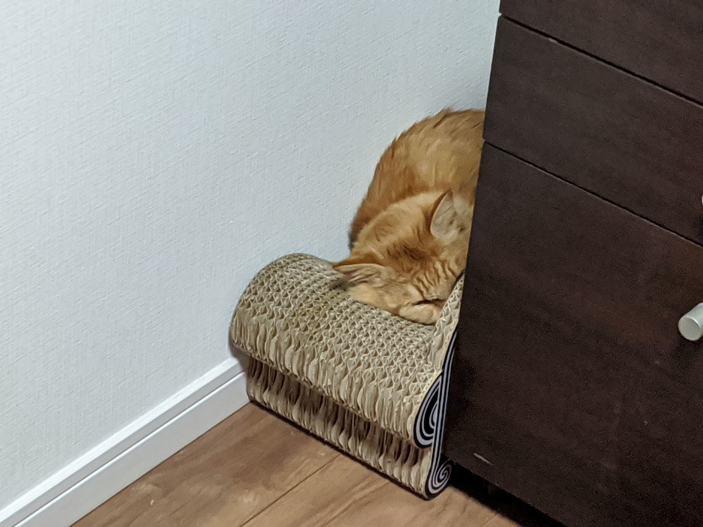
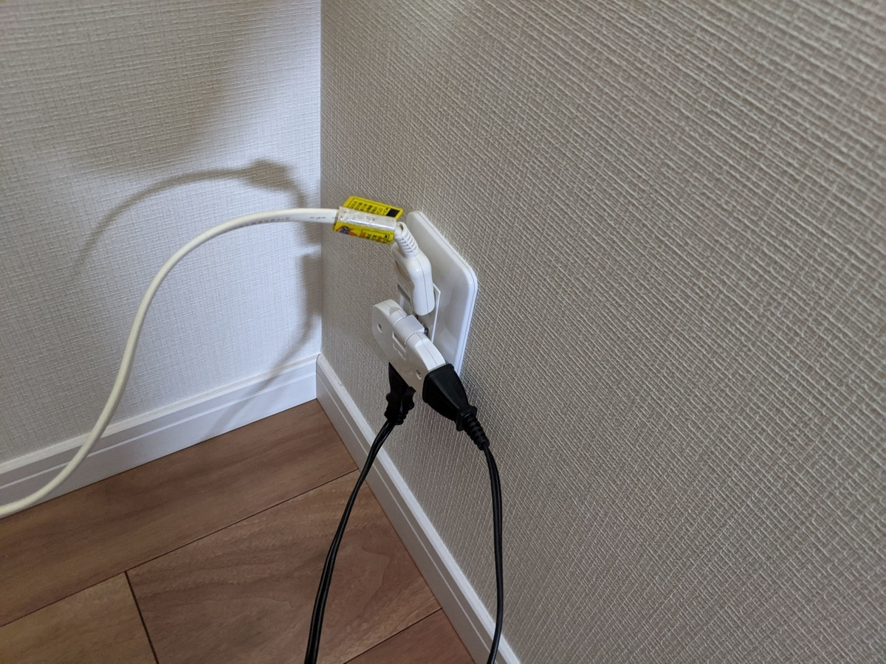

食器棚を建設した
公開日：
土曜日は Ameba で棋王戦第一局を観戦しながら、のんびりと食器棚を作った。今までは親父が旧居からもってきたキャビネットを代用していたのだけど、どうにもこうにも使いにくいし、デカいわりに収納力がない。親父もいなくなったことだし（アフリカに長期出張）、そのキャビネットはリビングに移動させて、キッチンを自分の使いやすいように大改造する決意なのだ。

うちのキッチンはちょうど 120cm の戸棚が入る。幅 90cm 程度のモノを買って、ごみ箱を置くスペースを作るか、幅めいいっぱいのものを買って収納を重視するかを少し悩んだけれど、結局は収納を重視することにした。収納があれば、その余裕でごみ箱を置くスペースは作れるけれど、その逆は無理そうなので。
食器棚がきたんだが、ハコ5個もある。死ぬな……明日やろう pic.twitter.com/wU6S0a7ASk
— 新型だるやなぎウイルス (@daruyanagi) 2020年1月31日
箱は合計5つ。佐川急便のお兄さんが、一人で頑張って14回まで持ってきてくれた。どれから開ければいいのかわからんかったが、とりあえず開いたのがたまたまビンゴ。1つ目だったようで、組立説明書がでてきた。
えらいことだ pic.twitter.com/akxTg7Dm1z
— 新型だるやなぎウイルス (@daruyanagi) January 31, 2020
そこで気が付いたんだけど、ちゃんと箱には「2/5」「5/5」といった感じで番号が振ってあった。何も運を試さずとも、「1/5」の箱を開ければよい。
どこから手を付けるべきか pic.twitter.com/Jnes1avM7B
— 新型だるやなぎウイルス (@daruyanagi) February 1, 2020
まずは欠品がないか確認しながら開封してい……こうと思ったんだが、部品点数が多すぎてやる気をなくした。とりあえずリビングと和室にパーツを広げ、番号が近いものをまとめていく。梱包材と段ボールが山のように出てきて、捨てに行くことを考えると頭が痛い。
お昼過ぎから、組立説明書にしたがって棚を作っていく。
棚ができて、ちょっとやる気湧いてきた。酒飲もう pic.twitter.com/QNUA1eeaoR
— 新型だるやなぎウイルス (@daruyanagi) February 1, 2020
不思議なもので、最初は作るのが億劫だったのに、棚が一つ、二つできていくと、ちょっと楽しくなって、ペースが速まっていく。本当は二人で作れと書いてあったのだけど、あいにく同居人はこんな感じなので役に立たない。

ただ、マキタの充電式ドライバドリルは大変役に立ってくれた。説明書には「ドライバーが必要」と書いていたけど、正直、ドライバー一本だったら半日では終わらなかったと思う。
 充電式ドライバドリル 10.8V 1.3Ah バッテリー2個付き DF030DWX")
マキタ(Makita) 充電式ドライバドリル 10.8V 1.3Ah バッテリー2個付き DF030DWX
- メディア: Tools & Hardware
少し進めてはお酒飲んで休憩し、休憩しては少し進めと、ゆっくり組み立てていく。
カッコいいだろ……信じられるか？ これ、逆についてるんだぜ…… pic.twitter.com/blabSMDKOv
— 新型だるやなぎウイルス (@daruyanagi) February 1, 2020
この説明書は上の段から組んでいくように指示しているのだけど、たぶん下の段から作った方がわかりやすいと思う。下から順にくみ上げてさえいれば、上の段のスチール部分を逆にくっつけてしまい、外して付け直す羽目にはならなかっただろう。
8時前になり、ようやく大まかな部分が完成した。
おおかたできたー。先飯くおう……今日何も食ってねえ pic.twitter.com/fKtsoHcNxh
— 新型だるやなぎウイルス (@daruyanagi) February 1, 2020
実働で3時間ぐらいはかかっただろうか。2人だったら2時間かからずにできたと思う。
部品余ったけど完成や（ pic.twitter.com/vKIjNyEt7l
— 新型だるやなぎウイルス (@daruyanagi) February 1, 2020
棚と扉を付けて、ちゃんと完成したのは午後11時。最後はちょっと疲れちゃって、作業が雑になったせいか、扉がちょっとずれてるような気はするけど、まぁまぁ、うまくいった。
この製品は組立説明書も丁寧で（ちゃんとパーツ名をいちいち書いていてくれる）、とても分かりやすい。さっき言ったように、組立順序には個人的に疑問を持っているけれど、まぁ、たいした問題ではないと思う。いくつか注文を付けるなら、コンセントは首折れタイプにしてほしいかな。

食器棚を壁にぴったりつけようと思うと、通常のタイプのコンセントではつっかえちゃうんだよね。これは L 字に曲がるタップをかまして解決した。あと、扉の蝶番は説明書のように、先に扉に組み付けるのではなく、食器棚側に軽く組み付ける方がよいと思う。そのあと扉の丸い穴に蝶番のもう一方を挟み、ネジを扉・棚を対角に締めていく方がやりやすいと思った。
まだ食器は収めていないのだけど、キッチンに鎮座していた電子レンジとオーブンが食器棚のオープンスペースに収まり、キッチンが広々として満足。炊飯器もスライドの上に置いた。水場に面したスチール部分には S 字フックを引っ掻ければ、ごみ袋なんかもつるせそうだ。